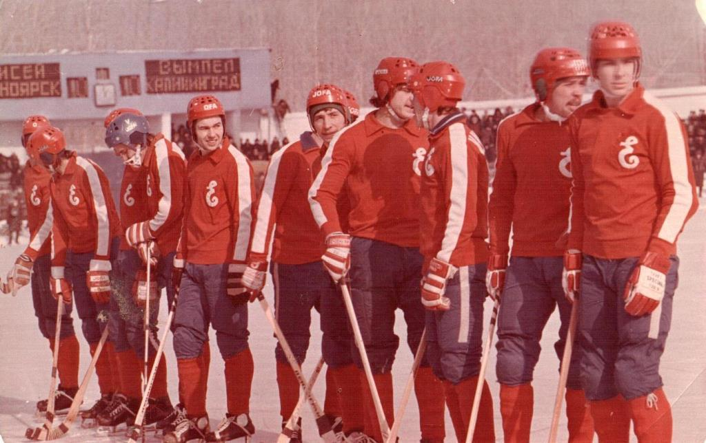
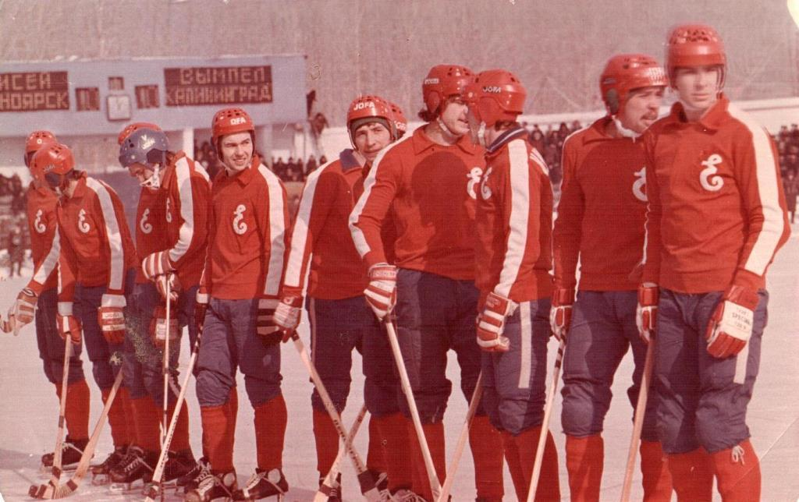

Красноярский хоккей с мячом имеет долгую и славную историю. На протяжении более чем 70 лет на союзной, а с 1993 года и российской арене, красноярские команды играли, как минимум, заметные и, как максимум – ведущие роли
Красноярский хоккей с мячом имеет долгую и славную историю. На протяжении более чем 70 лет на союзной, а с 1993 года и российской арене, красноярские команды играли, как минимум, заметные и, как максимум – ведущие роли. Сразу поясню, почему в данном материале речь пойдет не только о «Енисее», но и его предшественниках. Этому есть несколько причин. Первая – все команды внесли свой весомый вклад в развитие красноярского хоккея с мячом, и забывать об этом никак нельзя. Вторая – в послевоенное время, не смотря на то, что названия команд, представляющих Красноярск в группе «А» отечественного хоккея довольно часто менялись, играли в них, по сути, одни и те же игроки. Уже в те времена содержание команды высшей лиги было довольно накладным, вот и кочевали хоккеисты с завода на завод, с предприятия на предприятие… Кстати, подробную информацию о красноярских командах, ярко сверкнувших на небосклоне отечественного хоккея, вы можете увидеть ниже.
Что же касается непосредственно «Енисея», то успехи к одной и самых титулованных ныне команд России успехи пришли далеко не сразу. Созданная еще в 1934 году, команда долгое время находилась в тени более успешных конкурентов. Красмашевская дружина без особых успехов принимала участие в первенствах города и края. Однако звезды сложились так, что летом 1959 года практически все лучшие хоккеисты Красноярска перебрались на Красмаш. Если в сезоне 1959/60 годов «Енисей» занял достаточно высокое 8-е место, то следующий сезон обернулся настоящим конфузом. Семь первых матчей чемпионата СССР 1960/61 годов «Енисей» проиграл. Причем все они были сыграны на своем поле. После такого старта игроки вновь переехали на Комбайновый завод, и команда вновь (после четырехлетнего перерыва) стала называться «Торпедо». До конца сезона ситуацию выправить не удалось и место в классе «А» красноярцам удалось сохранить только благодаря победе в дополнительном матче на нейтральном поле над еще одним аутсайдером того чемпионата – иркутским «Локомотивом» 2:0. Но радость оказалась преждевременной: затеянная летом 1961 года реорганизация класса «А» оставила за бортом оного не только иркутскую команду, но и красноярскую…
В сезоне 1963 года «Енисей» все же вернулся в класс сильнейших, но ненадолго. В 1964 году красноярцы заняли 13-е место из 16 команд и вновь отправились на переэкзаменовку в класс «Б». И лишь в 1965 году наша хоккейная дружина окончательно вернулась в число лучших команд страны.
Однако не всегда все проходило гладко. «Енисей» быстро приобрел статус «крепкого середняка». Иногда команда занимала достаточно высокие места, и игрокам присваивалось почетное звание «мастер спорта». Но иногда «Енисей» был вынужден вести жестокую борьбу за выживание в высшей лиге. Примером первого стал сезон 1967/68 годов, когда на старте чемпионата красноярцы одержали восемь (!) побед подряд. Даже единственная в то время спортивная газета страны «Советский спорт» посвятила «Енисею» большой материал под заголовком «Енисей» разбушевался». Но, выдержать свой же высокий темп по конца чемпионата красноярцам удержать не удалось и тот сезон «Енисей» завершил на 7-м месте. Ну а примером второго стали три чемпионата СССР в начале 70-х годов (с 1972 по 1974) когда, кажется, только какое-то чудо не позволило нашим землякам «вылететь» в первую лигу…
И все же именно с сезоне 1974 года, как оказалось потом, в судьбе команды случилось одно знаменательное событие. 24 февраля 1974 года в матче против «Уральского трубника» в составе «Енисея» дебютировали совсем юные Сергей Ломанов, Андрей Пашкин и Виталий Савлук. Как показали дальнейшие события, именно они стали «первыми ласточками» по-настоящему «золотого» поколения нашей команды.
Можно сказать, что «Енисею» в какой-то мере повезло: именно в Красноярске в период с 1956 по 1960 годы родилось целое поколение блестящих игроков. Помимо вышеназванного трио в скором времени в команде появились Виктор Шакалин, Юрий Першин, Юрий Лахонин, Виталий Ануфриенко, Сергей Шилов, Михаил Лещинский… Эта молодежь при поддержке чуть более опытных Виктора Ломанова, Юрия Иванова и Владимира Куманева в скором времени стала представлять собой очень грозную силу.
11 марта 1978 года переполненный стадион «Енисей» приветствовал первый большой успех команды. Обыграв в заключительном матче чемпионата кемеровский «Кузбасс» со счетом 20:5 красноярцы спустя 25 лет повторили достижение «Трактора» и завоевали бронзовые медали.
К сожалению, быстро развить успех 1978 года не удалось: в сезоне 1979 года «Енисей» занял 4-е место. Во многом это было обусловлено тем, что часть матчей красноярцы провели без своего лидера Сергея Ломанова, призванного в ряды сборной СССР. Однако тот сезон команда завершила на мажорной ноте, одержав победы в трех последних матчах. В числе поверженных оказались и серебряные призеры того чемпионата динамовцы Алма-Аты – 11:4.
Следующий сезон 1979/80 годов «Енисей» начал с серии из шести побед подряд на своем поле. Однако в первом же выездном матче команду подстерегла неудача в подмосковном Калининграде – 3:4. Что это было? Повторение старой болезни, выражавшейся в неумении команды уверенно играть на чужих стадионах, или единичная неудача? Дальнейшие события показали, что второй вывод был правильным. «Енисей» на одном дыхании прошел всю дистанцию чемпионата, и 8 марта 1980 года обыграв на родном стадионе калининградский «Вымпел» со счетом 4:2, обеспечил себе первый чемпионский титул в истории. Помогло еще и то, что в тот день главные конкуренты красноярцев в чемпионской гонке – красногорский «Зоркий» и горьковский «Старт» – свои выездные матчи завершили вничью.
Так началась беспрецедентная чемпионская серия в истории отечественного хоккея: десять лет подряд «Енисей» никому не отдавал чемпионское звание. Причем почти все титулы были завоеваны досрочно, за несколько туров до завершения чемпионата. В 1984 году «Енисею» удался золотой «дубль», когда к чемпионскому званию команда добавила титул обладателя Кубка СССР. Ну и, конечно, немаловажно то, что многочисленные достижения внутри страны были подтверждены успехами на международной арене. Шесть раз «Енисей» выигрывал Кубок европейских чемпионов и дважды – Кубок Мира.
Однако в 90-х годах красноярская дружина вступила в непростой период смены поколений. Перед этим, правда, «Енисею» удалось завоевать серебряные медали в 1990 году и одиннадцатый чемпионский титул в 1991-м. Этот успех стал лебединой песней команды. К тому же к сезону 1992 года практически все лидеры «Енисея» 80-х годов перебрались в шведские клубы. Один за другим из Красноярска в Скандинавию уехали Андрей Пашкин, Сергей Ломанов, Виктор Шакалин, Юрий Першин, Виталий Ануфриенко. Чуть позже туда же уехали Андрей Сизов и Юрий Лахонин. Естественно, полноценно заменить таких мастеров было невозможно. Как итог – 5-е место «Енисея» в сезоне 1992 года и настоящее падение в 1993-м: на 17-е место наша команда никогда до этого не опускалась.
 Главная
Главная
 Клуб
Клуб  Турнирная сетка
Турнирная сетка
 Катание
Катание
 


 Медиа
Медиа  Контакты
Контакты